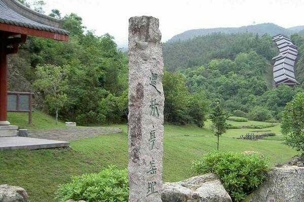
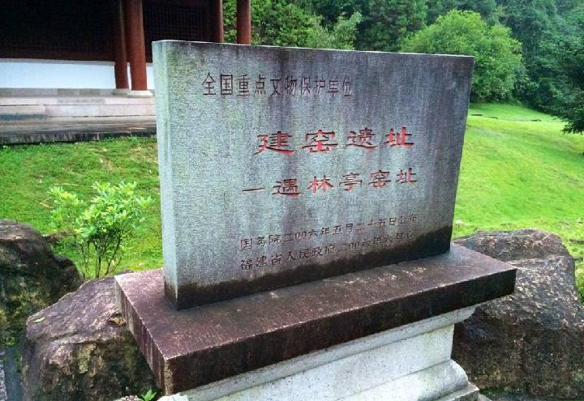

遇林亭窑址
国家普通级旅游景区
开放时间：:8:00-17:00
景点介绍


遇林亭窑址位于武夷山风景名胜区的西北部，面积达6万余平方米，是我国宋代八大窑系中的建窑系窑址之一。1958年全国文物普查被发现后，于1961年5月被福建省人民政府公布为全省第一批重点文物保护单位，在发掘地段内，发掘清理了宋代两座半地穴平焰斜面龙窑，其中一座长73.2米，另一座长达113.1米。两座窑基宽均为2米.是目前全国规模最大、保存最完整的宋代古窑址之一。
遇林亭窑产品在国内传世品中极为罕见，而在日本根津美术馆——德川美术馆编的《天目》一书中，却收录了多件这类黑釉瓷碗，其中有描金彩“寿山福海”，图之上圈还书写有朱熹的“武夷棹歌”诗词之句。其特征与遇林亭窑址产品如出一辙，从而说明早在宋代，遇林亭窑产的精品也开始用于外销、走向世界。
1999年12月1日，武夷山被联合国科教文组织列入世界文化与自然遗产名录，遇林亭窑址成为武夷山世界文化遗产的重要组成部分。
武夷山风景名胜区二日游、三日游门票包含遇林亭窑址景区门票，游客可在购买风景名胜区门票后自行安排时间游览，游程约2小时左右。